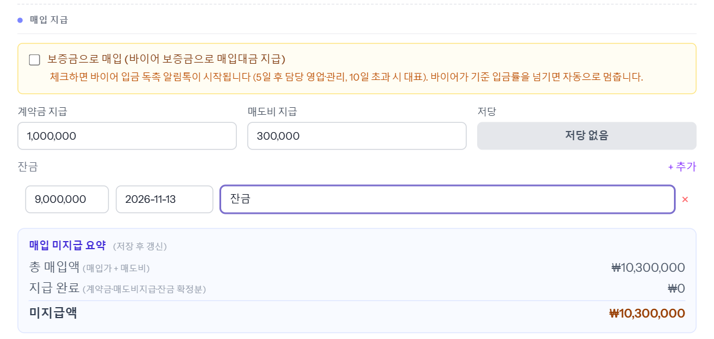
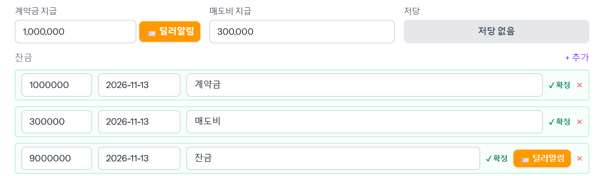
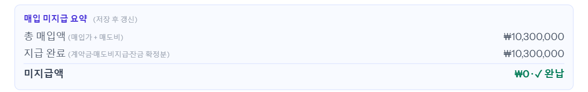
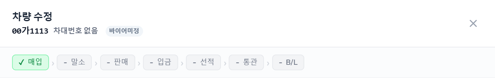
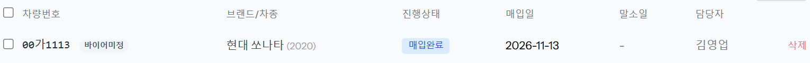
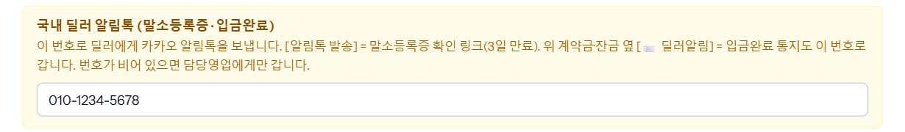
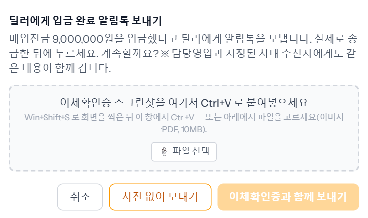

딜러에게 매입 대금을 보낸 뒤 ERP에 기록하고, 딜러에게 「입금했습니다」 알림톡을 보내는 단계입니다. 재무(또는 관리)가 합니다.
① 보낸 돈 기록하기
1단계
차를 열고 매입 탭 「매입 지급」에 보낸 금액을 넣습니다
차량 관리에서 차를 눌러 열고 「매입」 탭을 아래로 내리면 「매입 지급」이 있습니다.
- 계약금 지급 — 계약할 때 먼저 보낸 계약금(원).
- 매도비 지급 — 매도비로 보낸 돈(원).
- 잔금 — 오른쪽 [+ 추가]를 누르면 한 줄이 생깁니다. 금액 · 보낸 날 · 비고를 넣습니다. 잔금을 두세 번 나눠 보냈으면 보낼 때마다 한 줄씩 추가합니다.
- 저당 — 저당이 잡힌 차면 눌러서 「저당 있음」으로 바꿉니다. 딜러 알림톡에 「저당 해지를 부탁드립니다」 한 줄이 같이 나갑니다.
예시는 계약금 1,000,000원, 매도비 300,000원, 잔금 9,000,000원(2026-11-13)입니다.

위쪽 「보증금으로 매입」은 바이어 보증금으로 매입 대금을 치른 경우에만 체크합니다. 보통 매입에서는 건드리지 않습니다.
2단계
[수정 저장] — 재무가 넣은 지급은 바로 「확정」됩니다
창 오른쪽 아래 [수정 저장]을 누릅니다. 재무·관리 계정이 넣은 지급은 저장하는 순간 「✓ 확정」으로 기록되고, 따로 승인받을 필요가 없습니다.
차를 다시 열면 계약금·매도비도 잔금 목록에 한 줄씩(비고 「계약금」·「매도비」, 날짜는 저장한 날) 「✓ 확정」으로 보이고, 계약금 칸 옆과 잔금 줄 옆에 주황색 [📨 딜러알림] 버튼이 생깁니다.

3단계
「매입 미지급 요약」이 0이 되면 「매입완료」
그 아래 「매입 미지급 요약」에서 줄 돈과 보낸 돈을 맞춰 봅니다. 예시는 총 매입액 10,300,000원, 지급 완료 10,300,000원으로 미지급액 ₩0 · ✓ 완납입니다.

다 갚으면 창 위 진행 줄의 「매입」에 초록색 체크가 붙고, 목록의 진행상태가 「매입중」에서 「매입완료」로 바뀝니다.


보낸 날을 앞으로의 날짜로 넣은 잔금은 그날이 되어야 「지급 완료」에 들어갑니다.
② 딜러에게 입금완료 알림 보내기
4단계
「국내 딜러 알림톡」 칸에 딜러 휴대폰 번호를 확인합니다
매입 탭 아래쪽 노란 칸 「국내 딜러 알림톡」에 딜러 휴대폰 번호를 넣습니다. 말소등록증을 보낼 때도 같은 번호 칸을 씁니다.

- 휴대폰 번호(010…)만 받습니다. 형식이 틀리면 경고가 뜨고 보내지지 않습니다.
- 번호를 비워 두면 딜러에게는 안 가고 담당 영업에게만 갑니다.
※ 그림의 번호는 지어낸 예시입니다.
5단계
[📨 딜러알림] → 이체확인증을 붙이고 보냅니다
실제로 송금한 뒤에 누릅니다. 계약금은 계약금 칸 옆, 잔금은 그 잔금 줄 옆의 버튼입니다(잔금을 나눠 보냈으면 줄마다 따로 보냅니다). 매도비에는 버튼이 없습니다.
누르면 「딜러에게 입금 완료 알림톡 보내기」 창이 뜹니다.
- 이체확인증 붙이기 — 은행 이체 화면을 Win+Shift+S로 찍은 뒤 이 창에서 Ctrl+V로 붙여넣거나, [파일 선택]으로 이미지·PDF(10MB까지)를 고릅니다.
- [이체확인증과 함께 보내기] — 알림톡에 「이체확인증 보기」 버튼이 달려 나가고, 딜러가 7일 동안 열어 볼 수 있습니다. 붙인 파일은 그 지급 줄에 저장됩니다.
- [사진 없이 보내기] — 이체확인증 없이 보냅니다.
- [취소] — 보내지 않고 닫습니다.

보내면 「입금완료 알림톡을 발송했습니다. (9,000,000원)」이 뜹니다.
※ 3사 모두 이체확인증 버튼 알림톡이 켜져 있습니다(2026-11-13 확인).
6단계
딜러와 담당 영업이 받는 알림톡
딜러에게 가고, 담당 영업과 회사가 지정한 사내 수신자에게도 같은 내용이 갑니다. 계좌번호는 뒤 4자리만 보입니다.
[매입대금 입금 안내] 00가1113
차량 매입 거래처(딜러)와 사내 담당 임직원에게 발송되는 입금 통지입니다.
▶ 차량번호: 00가1113
▶ 구분: 매입잔금
▶ 입금 금액: 9,000,000원
▶ 입금받으신 계좌: 국민은행 ****9012
▶ 입금자명: HEYMAN
※ 특이사항 없음
위 금액을 입금해 드렸습니다. 입금받으신 계좌에서 내역을 확인해 주세요.
아래 [이체확인증 보기] 버튼으로 이체확인증을 7일간 볼 수 있습니다.
본 안내는 차량관리 ERP에서 담당자가 입금 처리 후 발송합니다.
승인된 문안에 예시 차량 값을 넣은 것입니다. [이체확인증 보기] 버튼은 이체확인증과 함께 보낼 때만 붙고, 사진 없이 보내면 버튼 안내 줄이 빠집니다. 입금자명은 회사에 따라 SSANCAR · HEYMAN · KARABA로 들어갑니다. 저당 있음이면 「※ 특이사항 없음」 자리에 「※ 저당이 설정된 차량입니다. 저당 해지를 부탁드립니다.」가 들어갑니다.
알아 둘 것
- 지급 기록과 [📨 딜러알림]은 재무·관리만 할 수 있습니다. 영업 계정에서는 칸이 회색으로 잠겨 있습니다.
- 딜러 알림은 실제로 송금한 뒤에 보냅니다. 버튼은 확정된 금액만 보냅니다(저장 안 한 금액은 안 나갑니다).
- 저당 표시를 바꿨으면 먼저 [수정 저장]을 누른 뒤 보내세요. 저장하지 않고 보내면 「저당 표시를 바꾼 뒤 아직 저장하지 않았습니다」가 뜨며 막힙니다.
- 아직 확정되지 않은 매입 지급은 「재무 처리」 메뉴 「매입 잔금」 탭의 「재무 대기」에 모입니다. 거기서 [재무 처리 완료]를 누르면 확정됩니다.
- board에서 온 매입잔금·계약금 요청은 씬 「board 매입잔금·계약금 요청 처리」를 보세요.